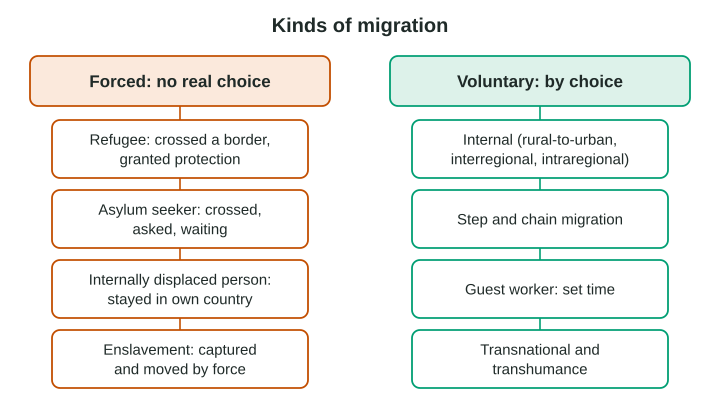
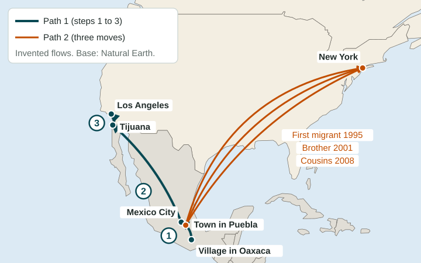

Forced and Voluntary Migration
Forced migrants are made to move, as refugees, asylum seekers, internally displaced persons or, in the past, enslaved people.
Part 1 · Hook
Why this matters
Part 2 · Before you start
What this builds on
Part 3 · Prerequisite check
Quick check before you start
1. Drought ruins a family’s crops at home. What is the drought?
- A push factor
- A pull factor
- An intervening opportunity
- An intervening obstacle
Show the answer
Problems at the origin push people out.
- Correct: A push factor:
- A pull factor:
- An intervening opportunity:
- An intervening obstacle:
2. Which of Ravenstein’s laws says many people move from village to town to city?
- Migration often happens in steps
- Each flow has a counterflow
- Most migrants are adults
- Long-distance migrants go to big cities
Show the answer
Ravenstein found many migrants move in stages.
- Correct: Migration often happens in steps:
- Each flow has a counterflow:
- Most migrants are adults:
- Long-distance migrants go to big cities:
Part 4 · See it
See it first

Part 5 · Step by step
How it works, step by step
- War, persecution, disaster or enslavementpeople are forced to move
- Forced migrants stay inside their countrythey are internally displaced persons
- Forced migrants cross a border and ask for protectionthey are asylum seekers until a decision, and refugees if protection is granted
- People choose to move for work, family or studyvoluntary migration, often in steps or along chains of relatives
Part 6 · Key ideas
Key ideas
- Forced migration: people are made to move (enslavement, war, persecution, disaster). Voluntary migration: people choose to move.
- Forced types: refugee (crossed a border, granted protection), asylum seeker (asked, waiting), internally displaced person (stayed in the country).
- Voluntary types: internal (interregional or intraregional), rural-to-urban, step, chain, guest worker, transnational and transhumance.
- Real moves often mix choice and force, so explain the case instead of only naming a type.
Part 7 · Misconception
A common mistake
The wrong idea: Anyone who flees danger is a refugee.
What actually happens: A refugee has crossed an international border and been recognized as needing protection. People who flee but stay in their own country are internally displaced persons; people who have asked for protection and are waiting are asylum seekers.
Part 8 · Check yourself
Check yourself
Exam-style questions. Anything you miss goes into your review queue.
Image
A flow map of two migration paths from Mexico to the United States (invented flows)

1. Which kind of migration does Path 1 show?
- Step migration
- Chain migration
- Transhumance
- Forced migration
Show the answer
Step migration is a move made in stages, each to a larger or closer-to-the-goal place. Path 1 has three steps.
- Correct: Step migration: Right: the migrant moves in stages: village, large city, border city, then Los Angeles.
- Chain migration: chain migration is relatives following earlier migrants, as in Path 2.
- Transhumance: transhumance is the seasonal movement of herders and their animals.
- Forced migration: nothing on the map shows the migrant was forced to move.
2. Which kind of migration does Path 2 show?
- Step migration
- Chain migration
- Internal migration
- Guest worker migration
Show the answer
Chain migration happens when migrants follow relatives or neighbors who moved before them, often to the same city or neighborhood. The labels show a first migrant in 1995, then a brother and cousins.
- Step migration: Path 2 goes straight to New York in one move each time.
- Correct: Chain migration: Right: relatives follow the first migrant to the same place over the years.
- Internal migration: Path 2 crosses an international border.
- Guest worker migration: nothing shows a temporary work permit; relatives are joining family.
Data
Five people on the move (invented cases)
| Person | What happened |
|---|---|
| Amal | Fled fighting in her city, crossed into a neighboring country and was granted protection there |
| Bilal | Fled floods in his province and now lives in a camp in another province of the same country |
| Chen | Crossed a border, asked for protection because of his religion and is waiting for a decision |
| Dana | Works on a farm in another country on a two-year permit and plans to go home |
| Emil | Moves his sheep up to mountain pastures each summer and back to the valley each winter |
Invented data for practice.
3. Which person in the table is a refugee?
- Amal
- Bilal
- Chen
- Dana
Show the answer
A refugee has crossed an international border to escape danger or persecution and has been recognized as needing protection.
- Correct: Amal: Right: she fled across a border and was granted protection as a refugee.
- Bilal: he is still in his own country, so he is an internally displaced person.
- Chen: he has asked for protection but is still waiting, so he is an asylum seeker.
- Dana: she moved by choice to work: a guest worker.
4. How is Bilal’s situation different from Amal’s?
- He moved by choice, while she was forced to move
- He stays inside his own country; she crossed a border
- He crossed a border, while she stayed inside her country
- He is waiting for a decision on protection, while she has been granted it
Show the answer
Both were forced to move. The difference is the border: an internally displaced person (IDP) stays inside the country; a refugee has crossed into another.
- He moved by choice, while she was forced to move: both were forced from their homes.
- Correct: He stays inside his own country; she crossed a border: Right: Bilal is an internally displaced person, Amal a refugee.
- He crossed a border, while she stayed inside her country: this reverses the two cases.
- He is waiting for a decision on protection, while she has been granted it: that describes Chen, not Bilal.
5. What is Chen?
- A refugee who has already been granted protection
- An internally displaced person
- An asylum seeker
- A guest worker on a temporary permit
Show the answer
An asylum seeker has crossed a border and asked for protection as a refugee but has not yet received a decision.
- A refugee who has already been granted protection: his claim has not yet been decided.
- An internally displaced person: he has crossed an international border.
- Correct: An asylum seeker: Right: he has asked for protection and is waiting for a decision.
- A guest worker on a temporary permit: he asked for protection, not a work permit.
6. A nurse from the Philippines works in Canada, sends money home, visits each year and is active in a Filipino association in both countries. Which term describes her?
- A transnational migrant
- An internally displaced person
- An asylum seeker
- A step migrant
Show the answer
Transnational migrants keep close links with their country of origin and their new country, living in both through family, money, travel and organizations.
- Correct: A transnational migrant: Right: she keeps strong ties to both countries at once.
- An internally displaced person: she moved by choice across a border.
- An asylum seeker: she did not ask for protection.
- A step migrant: nothing shows she moved in stages.
Part 9 · Summary
Summary
Part 10 · Up next
What comes next
Part 11 · Connections